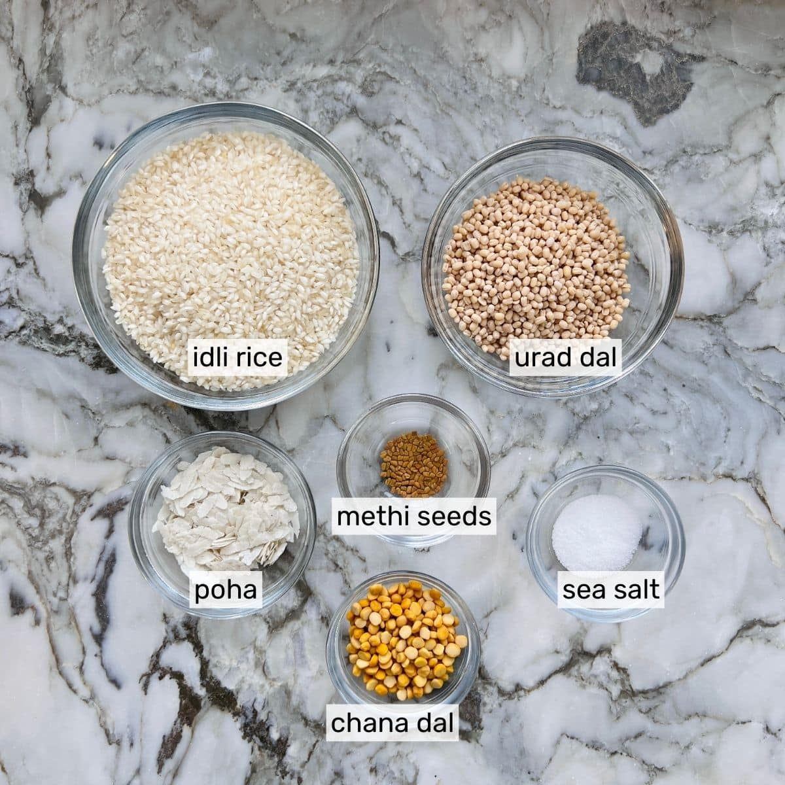
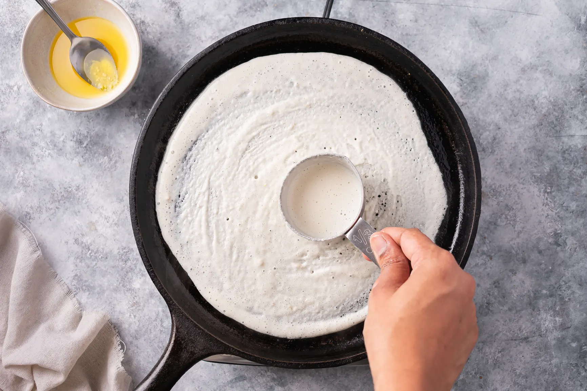
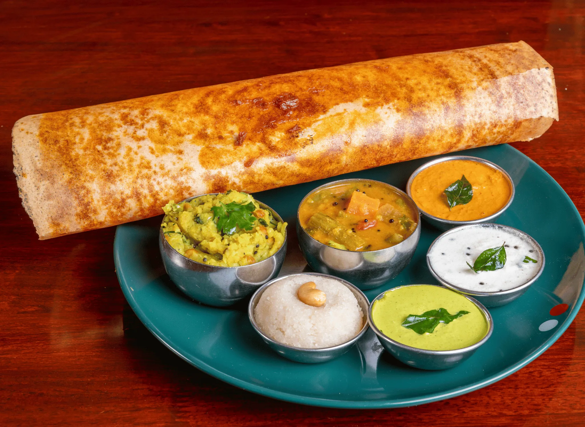

The traditional process to make dosa starts by soaking rice and lentils, which are later ground to a batter and fermented overnight in a warm place. After a good fermentation, the batter increases in volume, becomes light with plenty of small air pockets and develops a slight tangy flavor. The batter is spread like a crepe on a hot griddle/pan known as tawa or dose kallu. It is cooked with a little oil, ghee or butter until crisp. The joy of eating hot crispy dosas with your favorite Coconut Chutney, Potato Masala or Tiffin Sambar is unparalleled. At home we also love these with Aloo Chana kurma. Dosa recipes vary across households and regions of South India. They can be made with varying proportions of rice and lentils, which decide the texture and flavor of your dosai. I share 4 recipes in this post which I use often for my family meals. If you ask me why 4 recipes and not one? South Indians need different kind of dosas for every mood and season. Crispy, when you crave a restaurant meal. Soft, when you want something comforting, 2-in-1 batter when you are unable to decide between idli-dosa. High-protein type when you want to increase your protein intake. I can’t say one is better than the other because all these serve the purpose.
| Soak: | Rinse rice, dals, methi, and poha, then soak in water for 4–6 hours. |
| Grind: | Blend to a smooth, thick batter, using minimal water. |
| Ferment: | Let it rest in a warm place for 8-12 hours until it doubles in volume. |
| Cook: | Add salt, stir, and spread on a hot tawa with oil/ghee. |


